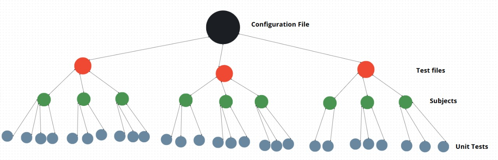

📘 WebTech Autograder Documentation
1. Overview
The WebTech Autograder is a powerful GitHub Action Plugin designed for GitHub Classroom to automate the grading of student projects. It focuses on coding assignments, providing instant, human-readable feedback directly in the student's repository.
Key Features:
- Automatic Code Grading: Runs predefined tests against student code.
- Customizable Grading Criteria: Enables instructors to adjust grading weights and preferences to fit specific requirements.
- Instant Feedback Generation: Creates a detailed Markdown report based on test results.
- Automated Repository Commits: Pushes the feedback report directly to the student's repository.
- GitHub Classroom Integration: Sends the final score back to the Classroom interface.
2.1 How It Works: The Userflow
After creating the assignment in Github Classroom, the teacher adds a template repository as the initial code for the assignment.
- Template Repository: The template repository must be fed with a configuration file and its related test_files (if no preset is used).
- Configuration File: Configuration files contain the grading criteria and other settings for the autograder.
- Github Classroom Assignment Interface After a submission, a student's grade will be pushed to Github Classroom and their grade will be available in the interface.
-
Starter Project Structure:
# students submission will be pushed here .github/ ├── tests/ │ ├── test_base.py │ ├── test_bonus.py │ └── test_penalty.py ├── criteria.json └── workflows/ └── classroom.yml This is the recommended structure for your assignment's template repository. Place your test files and
criteria.jsonin.github/tests/and.github/respectively, and your GitHub Actions workflow in.github/workflows/classroom.yml.
Example: GitHub Actions Workflow (.github/workflows/classroom.yml)
name: Autograder
on:
push:
branches:
- main
pull_request:
branches:
- main
workflow_dispatch:
jobs:
grading:
permissions: write-all
runs-on: ubuntu-latest
if: github.actor != 'github-classroom[bot]'
steps:
- name: Checkout repository
uses: actions/checkout@v4
- name: Check repository criteria
uses: webtech-journey/autograder@custom
Note: The value after @ (e.g., @custom) determines whether you are
using a preset autograder or your own custom unit tests. For more details, see the Presets or
Custom Graders section.
Example: criteria.json Configuration
{
"base": {
"weight": 75,
"subjects": {
"html": {
"weight": 50,
"test_path": "test_html_",
},
"css": {
...
}
}
},
"bonus": {
...
},
"penalty": {
...
}
}
base, bonus, penalty)
has an overall weight and a subjects object. Each subject (like html or
css) also has its own weight and specifies which test files or test prefixes to use
via test_path. This allows fine-grained control over how much each part of the assignment
contributes to the final grade.For more details, see the grading logic configuration section.
2.2 How It Works: The Workflow
The autograding process is initiated by a push to a student's repository and follows these steps:
- GitHub Action Trigger: The workflow starts when a student pushes code. This is defined in
your
.github/workflows/main.ymlfile. - Docker Environment: The
action.ymlfile specifies that the autograder runs in a Docker container, ensuring a consistent and clean testing environment. - Entrypoint Script: The
entrypoint.shscript is executed. It sets up environment variables and then runs the main Python application,autograder.py. - Scoring Orchestration:
autograder.pyorchestrates the grading process by using theScorerclass fromgrading/final_scorer.py. - Test Execution: The
Scorerclass creates instances of theGraderclass (grading/grader.py) for each test suite (base, bonus, penalty). TheGraderusespytestto run the tests. A custom plugin,TestCollector(utils/collector.py), captures the names of passed and failed tests. - Score Calculation: Based on the test results and the weights defined in
criteria.json, theScorercalculates the final score. - Feedback Generation: The
Scorercalls thegenerate_mdfunction fromutils/report_generator.py. This function uses the test results and the messages fromfeedback.jsonto create a detailed Markdown report. - Report Delivery:
autograder.pyuses theoverwrite_report_in_repofunction fromutils/commit_report.pyto commit the generated `relatorio.md` file to the student's repository. - Grade Submission: Finally, the
notify_classroomfunction fromutils/result_exporter.pyis called to send the calculated final score back to GitHub Classroom through the GitHub API.
3. Configuration
To tailor the autograder to your assignment, you need to configure the grading criteria and the tests.
3.1. Grading Criteria (criteria.json)
This file defines the weight of each test category. The base and bonus weights
should sum to 100. penalty is a deduction applied to the final score.
Example: criteria.json Configuration
{
"base": {
"weight": 75,
"subjects": {
"html": {
"weight": 50,
"test_path": "test_html_",
"include": ["test_html_title_exists", "test_html_has_h1"],
"exclude": ["test_html_has_inline_style"]
},
"css": {
"weight": 50,
"test_path": "test_css_"
}
}
},
"bonus": {
"weight": 25,
"subjects": {
"html": {
"weight": 100,
"test_path": "test_html_",
"include": ["test_html_extra_styling"]
}
}
},
"penalty": {
"weight": 10,
"subjects": {
"html": {
"weight": 100,
"test_path": "test_html_",
"exclude": ["test_html_legit_tag"]
}
}
}
}
3.1.1. Grading Artifacts as a Tree Structure
The grading configuration and test artifacts are organized as a logical tree of depth four:
-
Level 1 (Root): The entire
criteria.jsonconfiguration file. -
Level 2: The three test file categories—
base,bonus, andpenalty—each represented as a direct child of the root. There are always exactly three children at this level. -
Level 3: Each test file category contains N subjects (such as
html,css, etc.), where N can be any number depending on your configuration. - Level 4 (Leaves): Each subject contains the actual unit tests (the test functions defined in your test files).
This hierarchical structure allows you to flexibly organize grading logic, weights, and test coverage. The tree ensures that each test is mapped to a specific subject and category, making the grading process transparent and customizable.
 Figure: The grading artifacts tree. The root iscriteria.json, with three children
(base, bonus, penalty), each having N subjects, and each subject
containing its unit tests.
3.2. Test Suites
The test suites must be structured in three files inside the tests/ directory:
test_base.py, test_bonus.py, and test_penalty.py. Each file should contain
tests for their respective grading category, written using pytest and (optionally)
BeautifulSoup for HTML parsing.
Base Test Example (tests/test_base.py)
# tests/test_base.py
def test_html_html_tag():
"""
pass: The <html> tag is correctly present.
fail: The HTML document is missing the <html> tag.
"""
soup = parse_html()
assert soup.find('html') is not None, "The <html> tag is missing."
Bonus Test Example (tests/test_bonus.py)
# tests/test_bonus.py
def test_fontawesome_used():
"""
pass: FontAwesome was correctly linked and is being used for icons.
fail: FontAwesome was not found. Consider adding icons to visually enrich the page.
"""
soup = parse_html()
fa_linked = any('fontawesome' in link['href'].lower() for link in soup.find_all('link', href=True))
fa_used = bool(soup.find('i', class_=lambda x: x and 'fa' in x))
assert fa_linked and fa_used, "FontAwesome is not being used."
Penalty Test Example (tests/test_penalty.py)
# tests/test_penalty.py
def test_uses_table_for_layout():
"""
pass: Tables are used correctly for tabular data.
fail: A table was used for layout. Avoid using <table> for the visual structure of the page.
"""
soup = parse_html()
tables = soup.find_all('table')
# Example logic to detect layout tables
suspicious = [t for t in tables if len(t.find_all(['th', 'td'])) < 2]
assert not suspicious, "A table appears to be used for layout."
3.2.1. Feedback Answer Feature
Each test function should include a docstring with a pass: message and a fail:
message. These messages will be shown in the feedback report depending on whether the test passes or fails. For
example:
"""
pass: The <html> tag is correctly present.
fail: The HTML document is missing the <html> tag.
"""
3.3. Feedback Messages (feedback.json)
The utils/feedback_parser.py script is responsible for extracting the pass: and
fail: messages from each test's docstring and structuring them into the feedback.json
file. This file maps each test to its feedback messages, which are used in the generated report.
Example structure of feedback.json:
{
"base_tests": [
{
"grading/tests/test_base.py::test_html_doctype": [
"Perfeito! A declaração <!DOCTYPE html> está presente no início do documento.",
"Seu HTML está sem a declaração <!DOCTYPE html>. Adicione-a no topo do arquivo para garantir compatibilidade com navegadores."
]
},
{
"grading/tests/test_base.py::test_html_html_tag": [
"A tag <html> está corretamente presente, iniciando o documento HTML.",
"O documento HTML está sem a tag <html>. Adicione-a para garantir a estrutura correta."
]
}
// ... more tests ...
],
"bonus_tests": [
{
"grading/tests/test_bonus.py::test_html_favicon_link": [
"Você adicionou um favicon com sucesso! Sua página está mais profissional.",
"Faltando favicon. Adicione um dentro do para exibir o ícone na aba do navegador."
]
}
// ... more tests ...
],
"penalty_tests": [
{
"grading/tests/test_penalty.py::test_html_use_of_br_tag": [
"A tag <br> foi detectada. Prefira usar margens ou padding no CSS para espaçamento.",
"Nenhuma tag <br> foi encontrada. Ótimo! Use margens ou padding no CSS para espaçamento."
]
}
// ... more tests ...
]
}
5. System Architecture
The system is logically divided into several components:
- Execution:
action.yml,entrypoint.sh,autograder.py - Grading Core: The
grading/directory, containingfinal_scorer.pyandgrader.py. - Utilities: The
utils/directory, which has helper modules for configuration, GitHub API interaction, report generation, and test collection. - Configuration & Data:
criteria.jsonandfeedback.json.
6. Detailed Class & Module Breakdown
| File / Class | Description | Key Methods / Purpose |
|---|---|---|
autograder.py |
The main script that orchestrates the entire autograding process. It parses arguments, initializes the scorer, generates feedback, and notifies GitHub Classroom. | - Parses the GitHub token argument. - Calls Scorer.create_with_scores to run all tests and
calculate the score.- Calls overwrite_report_in_repo to push the feedback.- Calls notify_classroom to submit the grade.
|
grading/final_scorer.pyClass: Scorer |
Manages the overall scoring by combining results from base, bonus, and penalty tests. | - create_with_scores(...): A class method that initializes the scorer, runs all test suites,
and calculates the final score.- set_final_score(): Calculates the final score using the
formula: `base + bonus - penalty`.- get_feedback(): Generates the complete Markdown
feedback report by calling report_generator.generate_md. |
grading/grader.pyClass: Grader |
Responsible for running a single test suite (e.g., `test_base.py`) using `pytest` and calculating its score based on the configuration. | - create(...): A class method that initializes the grader and runs the tests to collect
passed/failed results.- get_test_results(): Invokes `pytest` programmatically with the
TestCollector plugin to capture test outcomes.- generate_score(): Calculates
the score for its suite, considering the weights from the configuration.
|
utils/config_loader.pyClass: Config |
Loads and parses the criteria.json file into a structured Python object
that can be easily used by the grading classes. |
- create_config(...): Loads the main JSON file and then creates separate `TestConfig` objects
for base, bonus, and penalty sections. |
utils/report_generator.pyFunction: generate_md(...) |
Generates a human-readable Markdown report from the test results. | - Takes the passed/failed test lists for each category, the final score, and the author's name. - It reads the corresponding friendly messages from feedback.json and formats them
into a structured report. |
utils/commit_report.pyFunction: overwrite_report_in_repo(...) |
Handles communication with the GitHub API to commit the feedback file into the student's repository. | - Uses the provided GitHub token to authenticate. - Gets the target repository. - Creates a new file (`relatorio.md`) or updates it if it already exists. |
utils/result_exporter.pyFunction: notify_classroom(...) |
Handles communication with the GitHub API to post the final grade back to GitHub Classroom. | - Uses the GitHub token to find the correct "Check Run" associated with the workflow. - Edits the Check Run to include the final score, which makes it visible in the GitHub Classroom UI. |
utils/collector.pyClass: TestCollector |
A simple `pytest` plugin that collects the results of a test run. | - Implements the `pytest_runtest_logreport` hook. - When a test finishes, it appends the test's node ID to either the `passed` or `failed` list. |
utils/feedback_parser.pyFunction: generate_feedback_from_docstrings() |
A utility script to automatically create the feedback.json file. |
- Reads all files in the tests/ directory.- It parses the docstring of each test function (looking for `pass:` and `fail:` prefixes) and maps them to the test's ID. |